# Removing useless columns and preprocessingcols_to_remove <-c('HADEVELOPT', 'PARKS_NM', 'TRANSIT_DISTRICT','STATION_NAME','HOUSING_PSA', 'CMPLNT_NUM', 'LOC_OF_OCCUR_DESC','JURISDICTION_CODE','KY_CD','PD_CD','RPT_DT','ADDR_PCT_CD')df <- df[, !(names(df) %in% cols_to_remove)]df$Date <-as.Date(df$CMPLNT_FR_DT, format ="%m/%d/%Y")df$CMPLNT_FR_TM <-strptime(df$CMPLNT_FR_TM, format ="%H:%M:%S")df$Hour <-format(df$CMPLNT_FR_TM, format ="%H")df$Hour <-as.integer(df$Hour)cols_to_remove <-c('CMPLNT_FR_TM', 'CMPLNT_TO_DT','CMPLNT_TO_TM', 'CMPLNT_FR_DT')df <- df[, !(names(df) %in% cols_to_remove)]
Code
df <- df[order(df$Date), ]ggplot(df, aes(x = Date)) +geom_histogram(binwidth =7, fill ="skyblue", color ="black", alpha =0.7) +geom_vline(xintercept =as.Date("2023-01-01"), linetype ="dashed", color ="red", linewidth =1) +labs(title ="Date Counts Histogram", x ="Date", y ="Count") +xlim(as.Date('2022-01-01'), max(df$Date)) +theme_minimal()
A significant proportion of the recorded crimes happened in the year 2023. The data from 2022 is underrepresented, therefore we’ll only use data from 2023.
value_counts <-table(df$LAW_CAT_CD)count_df <-data.frame(Category =names(value_counts), Count =as.numeric(value_counts))count_df <- count_df[count_df$Count >0,]ggplot(count_df, aes(y = Count, x = Category)) +geom_bar(stat ="identity") +labs(title ="Frequency of Crimes by Severity",y ="Frequency",x ="Crime Severity") +theme_minimal()
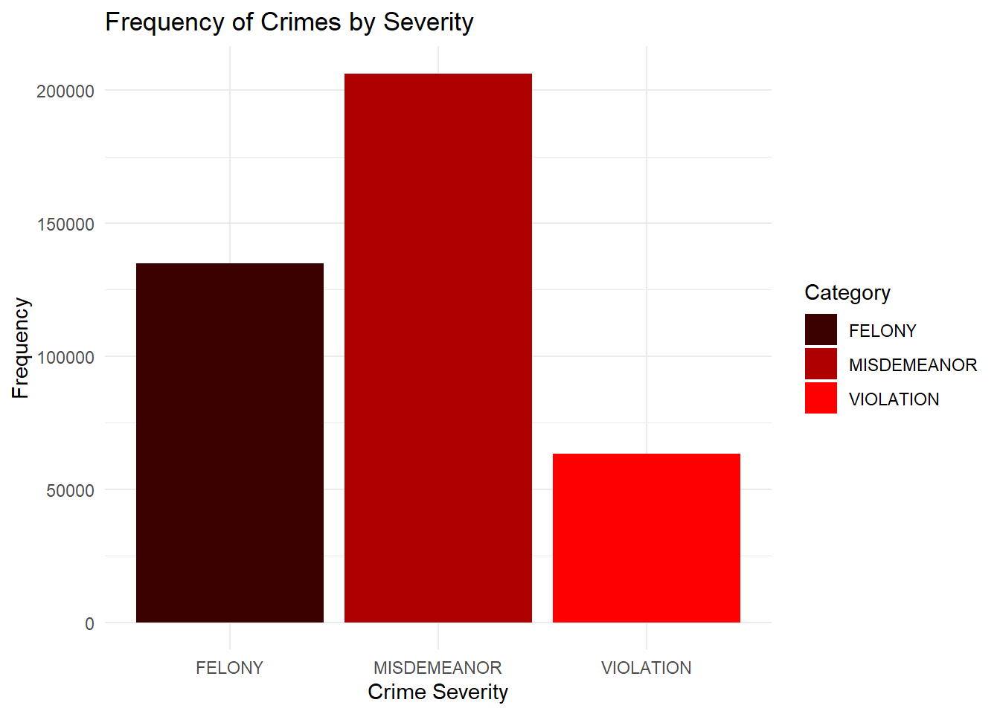
Felony: The most serious types of crimes. Examples of felonies include murder, rape, robbery, arson, and selling/possessing controlled substances. It is punishable by imprisonment for more than one year, or as long as life imprisonment.
Misdemeanor: A misdemeanor is the lowest level of crime. It is more serious than a violation, but less serious than a felony. It is a crime punishable by probation, a fine, or up to one year in jail.
Violation: Any non-criminal offense, other than traffic infractions. An offense punishable by up to a $250 fine or up to 15 days in jail. Examples of common violations include disorderly conduct and trespassing.
Misdemeanors make up the highest proportion of crimes. This includes less serious crimes with lighter punishments, so people may be more willing to risk attempting these types of crimes.
Petit Larceny is the highest committed crime, which is the act of stealing goods below 1000 dollars. There is plenty of opportunity for Larceny in New York City, especially Manhattan, due to the amount of products and shops.
The 2nd highest crime is 2nd Degree Harassment, which involves making physical contact in a threatening way (ex:shoving, kicking), following a person in a public place, or repeatedly engaging in annoying or alarming acts.
Following Harassment is 3rd Degree Assault, which involves causing physical injury to someone.
Fourth highest is Grand Larceny, which involves stealing goods 1000 dollars or above. Felony Assault comes fifth, and this involves causing more serious physical injury.
The most common crimes are a mix of mostly misdemeanors and felonies, however the top 3 most common crimes are misdemeanors and violations.
The Bronx has the highest crime per capita while Staten Island has the lowest. Manhattan also has a high crime per capita, just behind the Bronx. The proportion of crime severity tends to stay the same between all boroughs.
2022 population estimates were taken from: https://www.nyc.gov/site/planning/planning-level/nyc-population/nyc-population-current-estimates.page
Code
top_crimes <- count_df_crimes %>%tail(5)top_crimes$OFNS_DESC <-str_remove(top_crimes$OFNS_DESC, "\\s+\\w+$")borough_crime_df <- df[df$OFNS_DESC %in% top_crimes$OFNS_DESC,]borough_crime_df$OFNS_DESC <-factor(borough_crime_df$OFNS_DESC, levels = top_crimes$OFNS_DESC)borough_crime_df %>% vcd::mosaic(OFNS_DESC ~ BORO_NM, data = .,direction =c("v", "h"),main ='Proportion of top 5 crimes in boroughs',labeling =labeling_border(xlab ="lab",gp_labels =gpar(fontsize =8),rot_labels =c(30,0,0,0),offset_label =c(1,0,0,0),varnames =c(FALSE, FALSE),just_labels=c("center","right") ))
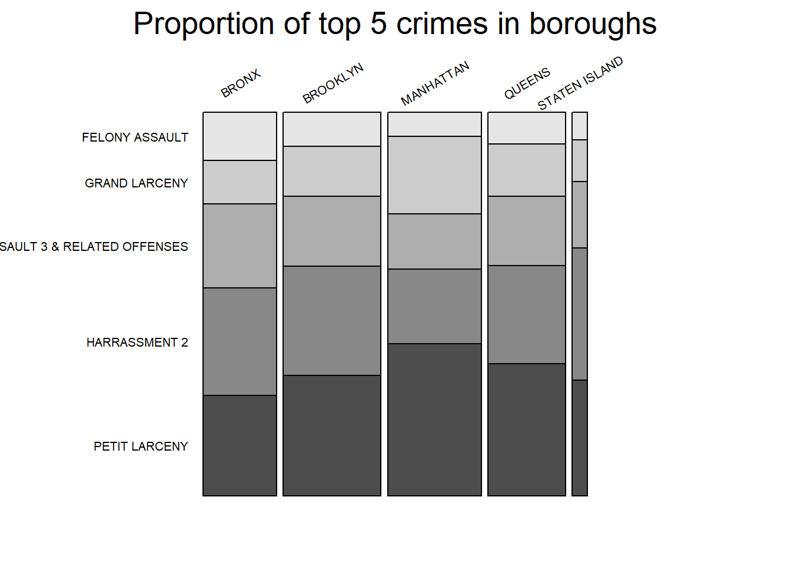
Manhattan has higher proportions of Larceny (Petit Larceny and Grand Larceny), which makes sense since it has more consumer products and stores. Assault 3, Grand Larceny, and Harassment are lower probably due to a higher police presence. It could also be due to higher density, since there would be more people walking around, which means more witnesses.
The other boroughs have lower larceny rates but higher assault and harassment rates. The Bronx has a higher proportion of Assault and Harassment than Larceny. These other boroughs have populations that are less dense and more spread out, allowing suspects to commit crimes with fewer witnesses.
Code
value_counts <-table(df$PREM_TYP_DESC)count_df <-data.frame(Category =names(value_counts), Count =as.numeric(value_counts))count_df <- count_df[count_df$Count >7000,]count_df <- count_df[order(count_df$Count), ]count_premise_df <- df %>%count(PREM_TYP_DESC)filtered_df <- count_premise_df[count_premise_df$n >7000, ]filtered_df <- filtered_df %>%na.omit()df$PREM_TYP_DESC <-fct_rev(fct_infreq(df$PREM_TYP_DESC))ggplot(df[df$PREM_TYP_DESC %in% filtered_df$PREM_TYP_DESC,], aes(y = PREM_TYP_DESC, fill =fct_rev(factor(LAW_CAT_CD)))) +geom_bar() +labs(title ="Frequency of Crimes at Premise",x="Frequency", y ="Premise Type", fill ="Severity") +scale_fill_manual(values =c("#FF0000", "#AF0000", "#3B0000"))
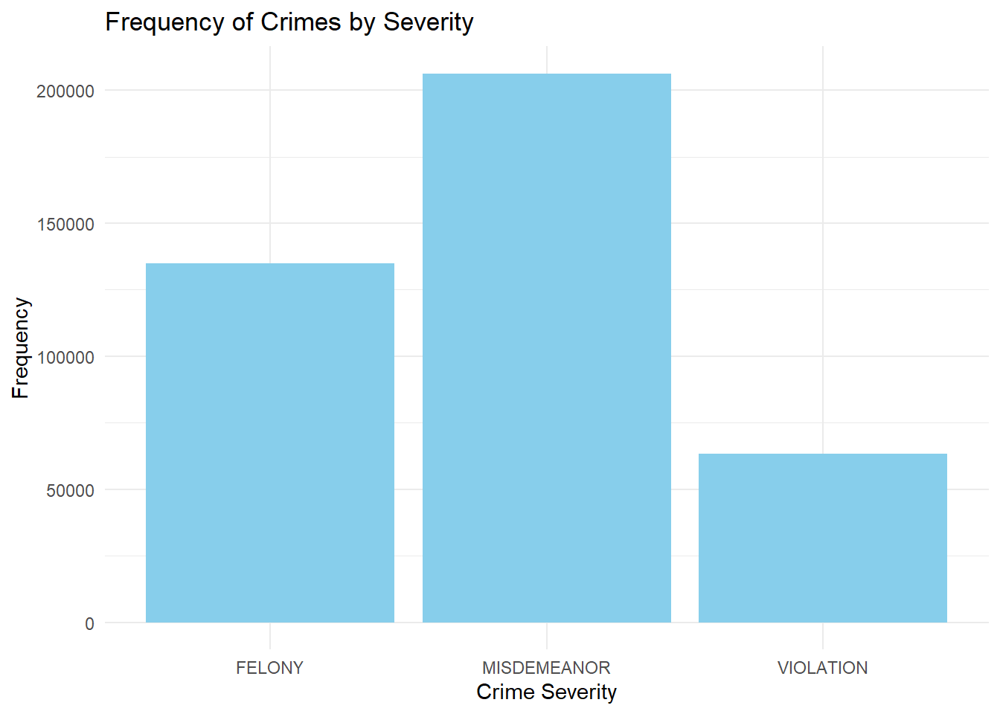
Streets not only has the most crime, but it also has the highest proportion of felonies compared to other premises, indicating it is the most dangerous. Crime has frequently happened at homes too, apt houses are the second most common premise for crimes, followed by houses and public housing. It makes sense apartments have a much higher crime count than houses and public housing, since apartments are a lot more common in New York. Don’t forget to lock your doors!
Subways are not as dangerous as people expect, probably because trains typically have a lot of people, which means more witnesses. Cops can also be seen patrolling New York subways from time to time.
Code
value_counts <-table(df[, c("OFNS_DESC", "PREM_TYP_DESC")])count_df <-data.frame(value_counts)result <- count_df %>%group_by(PREM_TYP_DESC) %>%summarise(total_value =sum(Freq))count_df <-merge(count_df, result, by ="PREM_TYP_DESC")count_df$ratio <- count_df$Freq*100/ count_df$total_valuecount_df <- count_df[count_df$total_value >8000,]count_df <- count_df[count_df$ratio >0,]sorted_df <- count_df %>%group_by(PREM_TYP_DESC) %>%arrange(desc(ratio)) %>%slice_head(n =5)sorted_df$OFNS_DESC <-str_sub(sorted_df$OFNS_DESC, end =15)sorted_df$PREM_TYP_DESC <-str_wrap(sorted_df$PREM_TYP_DESC, width =15)sorted_df <- sorted_df %>%arrange(ratio)ggplot(sorted_df, aes(x = ratio, y =reorder(factor(OFNS_DESC), ratio), fill = OFNS_DESC)) +geom_bar(stat ="identity", position ="dodge") +facet_wrap(~PREM_TYP_DESC, scales ="free",ncol =3) +labs(title ="Proportion of 5 most common offense across 9 highest crime rate premises", x ="Percent(%)", y ="Type of Offense") +theme( strip.text =element_text(size =7), axis.text.y =element_text(size =7) ) +guides(fill =FALSE) +coord_cartesian(xlim =c(0, 100))
The plots above show the proportion of crimes in each premise types. Only the top 5 common crimes are shown. Here we can see 3 general trends: 1) Indoor shop areas such as chain stores, commercial building, department store and drug stores show disproportionately high levels of Petit Larceny. 2) Residence areas show higher levels of assaults and harrassment. 3) Outdoor areas such as streets and the subway show an almost equal mix of all types of crimes.
This suggests shoplifting is indeed a big problem in stores, causing discomfort and injury to other people is a big problem in residential areas and outdoor areas have all sorts of crimes represented similarly.
Code
ggplot(df, aes(x = Month, fill =fct_rev(factor(LAW_CAT_CD)))) +geom_bar() +labs(title ="Crimes per month", x ="Month", y ="Frequency", fill ="Severity") +scale_fill_manual(values =c("#EF0000", "#9F0000", "#3B0000"))
Crime appears to have a slight increase during the summer months from May to August, exceeding 45000. That is around a 10% increase from the Jan-April period. The proportion of severity tends to stay the same throughout the year.
We also ran a chi-squared test to check independence:
Chi-squared test for given probabilities
data: month_contingency_table
X-squared = 1538.1, df = 8, p-value < 2.2e-16
The test resulted in a small p value, indicating that month does indeed affect the frequency of crime.
Code
# Crimes over time:value_counts <-table(df[, c("OFNS_DESC", "Hour")])crime_df <-data.frame(value_counts)# Severityggplot(df, aes(x =factor(Hour), color = LAW_CAT_CD, group = LAW_CAT_CD)) +geom_point(stat ="count", size =3) +geom_line(stat ="count", size =1) +labs(title ="Crimes over time (Severity)",x ="Time (Hour)", y ="Count", colour="Severity") +scale_color_manual(values =c( "#3B0000", "#AF0000", "#FF0000")) +scale_x_discrete(breaks =seq(0, 24, by =5), labels =function(x) sprintf("%02d:00", as.numeric(x))) +theme_minimal()
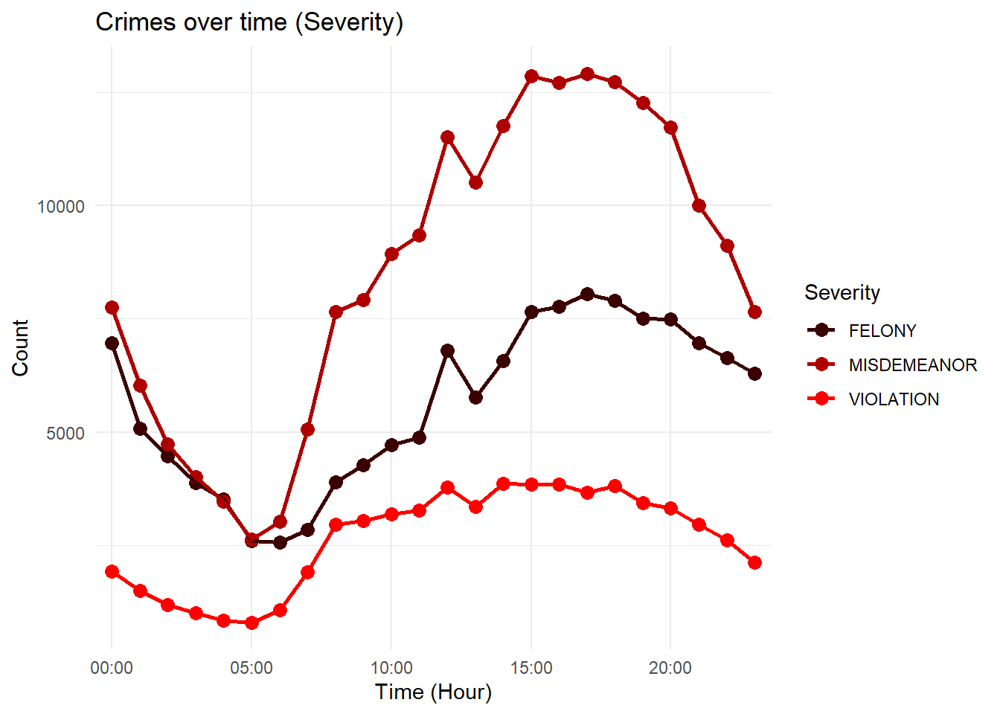
Across all severity levels, crimes tend to peak in the afternoon around 3-5pm. There is also a spike in crime at noon. This could be due to the fact that there are more people out and more shops open in the afternoon, which gives criminals more opportunity. Crime generally declines at night.
Crime is lowest at 5am, before it increases again into the morning. Let’s break down these crimes even further for more information:
Code
# Top 5top_categories <- df %>%group_by(OFNS_DESC) %>%summarise(Count =n()) %>%arrange(desc(Count))top_5 <- top_categories %>%head(5)data_filtered <- df %>%filter(OFNS_DESC %in% top_5$OFNS_DESC)ggplot(data_filtered, aes(x =factor(Hour), color = OFNS_DESC, group = OFNS_DESC)) +geom_point(stat ="count", size =2, alpha=0.5) +geom_line(stat ="count", size =0.5) +labs(title ="Crimes over time (Top 5 most common offenses)",x ="Time (Hour)", y ="Count", colour="Offense") +scale_x_discrete(breaks =seq(0, 24, by =5), labels =function(x) sprintf("%02d:00", as.numeric(x))) +theme_minimal()
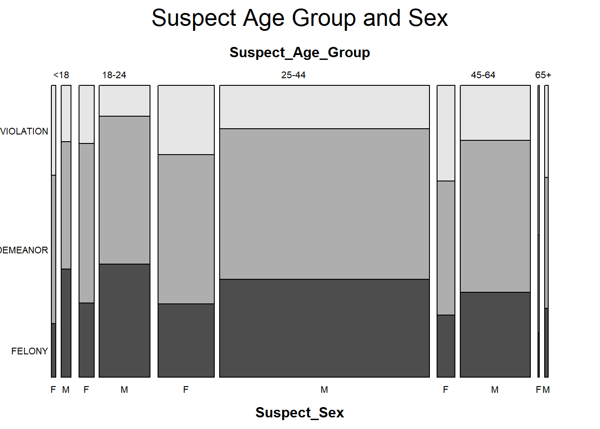
The highest crimes (Petit Larceny, Harrassment 2, and Grand Larceny) rise from 6am, peak at noon, and have a steep decline after 3pm.
It makes sense that these peak during the day, a time when people are out and shops are open. That would also explain why they decline at night after people go home.
Assault 3 typically occurs in the afternoon, with peaks at noon and 3pm. This stays relatively high at night compared to the other top crimes. Similarly, criminal mischief also tends to stay high throughout the afternoon and evening. Criminal mischief is defined as damaging property.
Criminal mischief staying active at night makes sense because there would be fewer people to witness property damage.
Code
# Top 6-10subset_crimes <- top_categories %>%slice(6:10)data_filtered <- crime_df %>%filter(OFNS_DESC %in% subset_crimes$OFNS_DESC)ggplot(data_filtered, aes(x =factor(Hour), y=Freq, color = OFNS_DESC, group = OFNS_DESC)) +geom_line(stat ="smooth", method ="loess", size =0.7) +labs(title ="Crimes over time (Top 6-10)",x ="Time (Hour)", y ="Count", colour="Offense") +scale_x_discrete(breaks =seq(0, 24, by =5), labels =function(x) sprintf("%02d:00", as.numeric(x))) +theme_minimal()
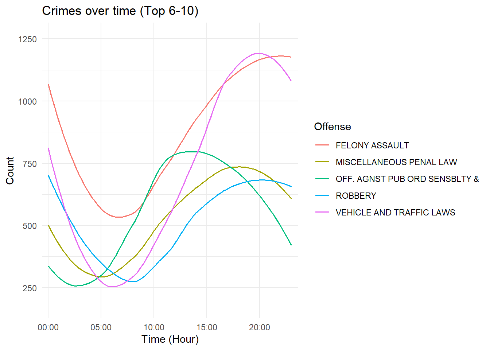
Code
# Top 11-15subset_crimes <- top_categories %>%slice(11:15)data_filtered <- crime_df %>%filter(OFNS_DESC %in% subset_crimes$OFNS_DESC)ggplot(data_filtered, aes(x =factor(Hour), y=Freq, color = OFNS_DESC, group = OFNS_DESC)) +geom_line(stat ="smooth", method ="loess", size =0.7) +labs(title ="Crimes over time (Top 11-15)",x ="Time (Hour)", y ="Count", colour="Offense") +scale_x_discrete(breaks =seq(0, 24, by =5), labels =function(x) sprintf("%02d:00", as.numeric(x))) +theme_minimal()
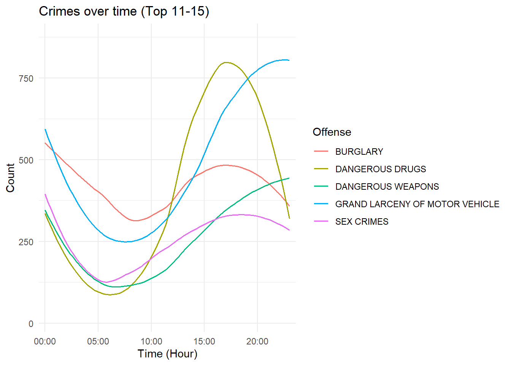
Vehicle and Traffic Law violations peak around 7pm, which could be due to rush hour traffic.
More serious crimes like robbery, felony assaults, and sex crimes are more likely to happen at night. This could be due to having fewer witnesses around. Dangerous weapons also peaks around midnight, possibly due to better escape options at night time. Burglary also peaks at midnight, a time when fewer people are awake to stop a suspect from breaking into a store or house. Grand larceny of motor vehicles peaks close to 11pm, possibly when the owner is asleep.
Similarly, most of the victims were Black, followed by White Hispanic. The most targeted age group is 25-44, followed by 46-64. There were more victims in the 46-64 age group than suspects. And there were more suspects in the 18-24 age group than victims.
There were a lot more female victims than female suspects. More Black and White Hispanic females were victims to crime as opposed to Black and White Hispanic males. Slightly more Asian and White males fell victim to crimes compared to Asian and White females.
This indicates suspects target those who are more vulnerable, taking advantage of age or gender.
For both victims and suspects, American Indians rarely appeared in criminal complaints in 2023.
This is just a boundar plot showing the outline of NYC.
Code
ggplot() +geom_polygon(data=nyc_map, aes(x = long, y = lat, group = group),fill ="grey", color ="black") +geom_bin2d(data=df_geo, aes(x = Longitude, y = Latitude), binwidth =c(0.004, 0.004), alpha=0.9) +scale_fill_gradientn(colors =inferno(100), name ="Density",limits =c(-100, 1500)) +coord_fixed(ratio =1.2) +theme_void()
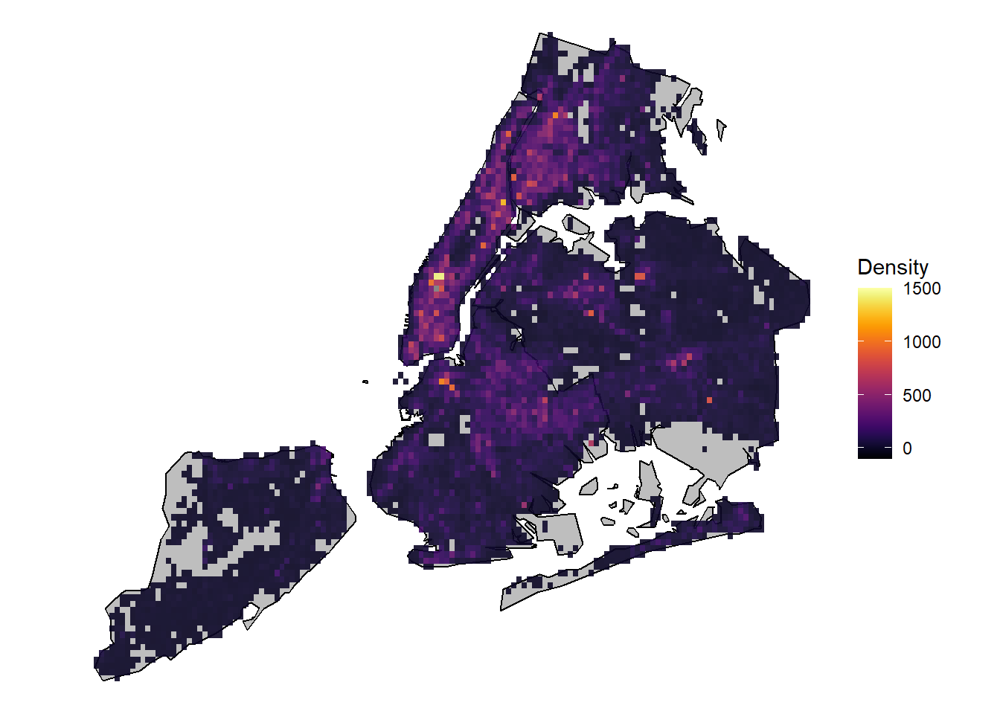
The crime density has been plotted over NYC as shown above. The binsize has been set to roughly cover 5 streets and 1 avenue. From here we can immediately see that most crimes are focused in Midtown Manhattan area just below Central Park. Not only that, Downtown Brooklyn, Downtown Flushing and the Bronx also show high crime activity. These are areas of high population density and it makes sense to have higher criminal activity in densely populated areas. As opposed to this, Staten Island has low crime rates, attributable to low population density.
Code
p <-ggplot() +geom_polygon(data=nyc_map, aes(x = long, y = lat, group = group),fill ="grey", color ="black") +geom_bin2d(data=df_geo, aes(x = Longitude, y = Latitude), binwidth =c(0.004, 0.004), alpha=0.9) +scale_fill_gradientn(colors =inferno(100), name ="Count/Pixel",limits =c(-10, 100)) +coord_fixed(ratio =1.2) +theme_void() +labs(title ="Hour: {frame}")# Here comes the gganimate specific bitsanimated_plot <- p +transition_manual(Hour) +enter_fade() +exit_fade()animate(animated_plot)
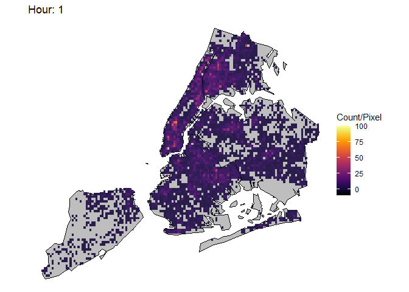
This animation plot shows the evolution of crime rates throughout the day from 00 hour to 24 hour. As we can see, with agreement to the timeseries plot above, crime rates are highest during Noon~14 hour time, with hotspots apprearing in Midtown Manhattan, Harlem, Bronx, Downtown Brooklyn and Downton Flushing.
Code
filter <- df_geo$OFNS_DESC =='PETIT LARCENY'p <-ggplot() +geom_polygon(data=nyc_map, aes(x = long, y = lat, group = group),fill ="grey", color ="black") +geom_bin2d(data=df_geo[filter, ], aes(x = Longitude, y = Latitude), binwidth =c(0.004, 0.004), alpha=0.9) +scale_fill_gradientn(colors =inferno(100), name ="Petit Larceny/Pixel",limits =c(-5, 40)) +coord_fixed(ratio =1.2) +theme_void() +labs(title ="Hour: {frame}")# Here comes the gganimate specific bitsanimated_plot <- p +transition_manual(Hour) +enter_fade() +exit_fade()animate(animated_plot)
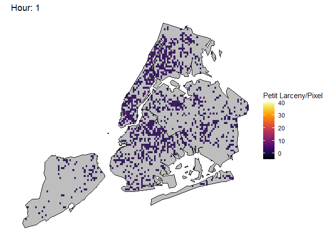
This animation plot has been filtered by type of offense. In this case, this plot only shows petit larceny, the most common offense in NYC. Here we can see a similar pattern as previous animation plots, where hotspots appear in Midtown Manhattan. However, now we can see more granular hotspots of petit larceny. Note the hotspot in the western boundary between Bronx and Manhattan, in Central Bronx, in Queens. These hotspots correspond to where Target stores are at. In fact, Target has announced to pull out from various locations in NYC due to shoplifting causing major losses. Also note the hour at which these hotspots get saturated, it is around 15 hour, which is the hour with the most customers in Target. It seems the more people involved, the more likely petit larceny occurs. Lower Manhattan also shows huge amounts of petit larceny during this same hour.
Code
filter <- df_geo$OFNS_DESC =='HARRASSMENT 2'p <-ggplot() +geom_polygon(data=nyc_map, aes(x = long, y = lat, group = group),fill ="grey", color ="black") +geom_bin2d(data=df_geo[filter, ], aes(x = Longitude, y = Latitude), binwidth =c(0.004, 0.004), alpha=0.9) +scale_fill_gradientn(colors =inferno(100), name ="Harrassment/Pixel",limits =c(-1, 10)) +coord_fixed(ratio =1.2) +theme_void() +labs(title ="Hour: {frame}")# Here comes the gganimate specific bitsanimated_plot <- p +transition_manual(Hour) +enter_fade() +exit_fade()animate(animated_plot)
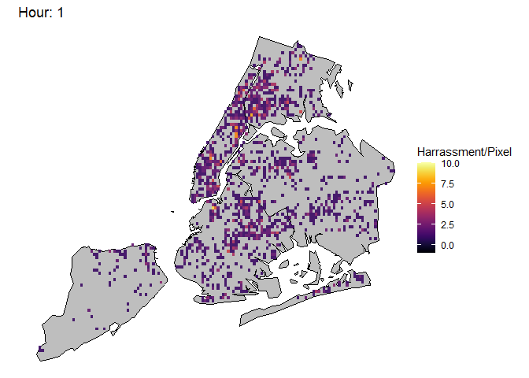
This plot shows Harrasment instances, the second most common offense in NYC. We see this offense having hotspots in the Bronx, Brookyn and Harlem and not so much in Midtown and Downtown Manhattan. It also shows a consistent peak from 10 hour to 20 hour, which are times when people are generally active. Unlike petit larceny, the hotspots are not as focused but more spread out.
Code
filter <- df_geo$OFNS_DESC =='ASSAULT 3 & RELATED OFFENSES'p <-ggplot() +geom_polygon(data=nyc_map, aes(x = long, y = lat, group = group),fill ="grey", color ="black") +geom_bin2d(data=df_geo[filter, ], aes(x = Longitude, y = Latitude), binwidth =c(0.004, 0.004), alpha=0.9) +scale_fill_gradientn(colors =inferno(100), name ="Misdemeanor Assault/Pixel",limits =c(-1, 10)) +coord_fixed(ratio =1.2) +theme_void() +labs(title ="Hour: {frame}")# Here comes the gganimate specific bitsanimated_plot <- p +transition_manual(Hour) +enter_fade() +exit_fade()animate(animated_plot)
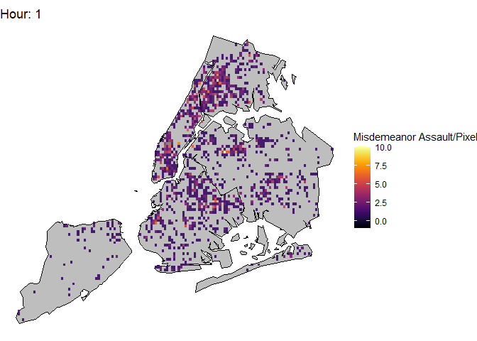
This plot shows Misdemeanor Assaults, the 3rd most common type. This crime shows similar patterns to harrasment. This makes sense considering the similarity of Assault and Harrasment.
Code
filter <- df_geo$OFNS_DESC =='GRAND LARCENY'p <-ggplot() +geom_polygon(data=nyc_map, aes(x = long, y = lat, group = group),fill ="grey", color ="black") +geom_bin2d(data=df_geo[filter, ], aes(x = Longitude, y = Latitude), binwidth =c(0.004, 0.004), alpha=0.9) +scale_fill_gradientn(colors =inferno(100), name ="Grand Larceny/Pixel",limits =c(-1, 10)) +coord_fixed(ratio =1.2) +theme_void() +labs(title ="Hour: {frame}")# Here comes the gganimate specific bitsanimated_plot <- p +transition_manual(Hour) +enter_fade() +exit_fade()animate(animated_plot)
This plot shows Grand Larceny, the 4th most common type. Here we can see that Midtwon and Downtown Manhattan are hotspots for this type of crime. Considering the affluence of those regions this makes sense. It also seems to be more active during 10 hour to 20 hour, when people are generally active.
Code
filter <- df_geo$OFNS_DESC =='FELONY ASSAULT'p <-ggplot() +geom_polygon(data=nyc_map, aes(x = long, y = lat, group = group),fill ="grey", color ="black") +geom_bin2d(data=df_geo[filter, ], aes(x = Longitude, y = Latitude), binwidth =c(0.004, 0.004), alpha=0.9) +scale_fill_gradientn(colors =inferno(100), name ="Felony Assault/Pixel",limits =c(-1, 10)) +coord_fixed(ratio =1.2) +theme_void() +labs(title ="Hour: {frame}")# Here comes the gganimate specific bitsanimated_plot <- p +transition_manual(Hour) +enter_fade() +exit_fade()animate(animated_plot)
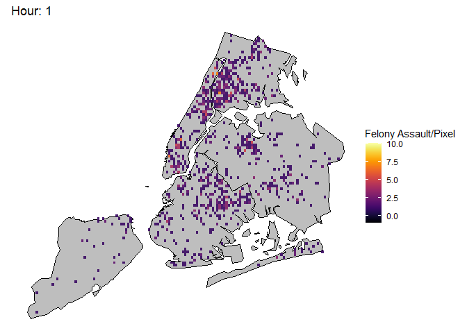
This plot shows Assault Felonies, the 5th most common type. Here we can see a similar pattern to Harrassment, where hotspots are located in The Bronx, Harlem, Downtown Brooklyn areas.